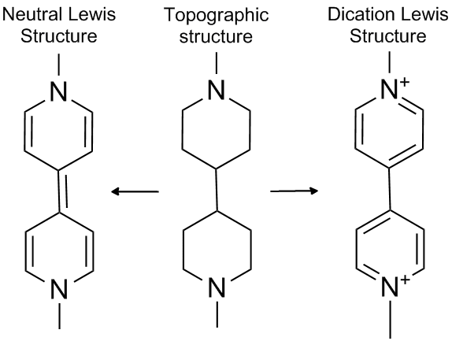

Finding all the charged sites in a large molecule is tedious, and if done by hand, is prone to errors. If the charge calculated by MOZYME does not match the charge supplied in the data set (either zero, if charge=n is absent, or n, if charge=n is supplied), then the calculated Lewis structure will be printed along with a list of the charged sites found when the Lewis structure was generated. In some cases a charged atom will be different to that expected. Thus in a charged arginine residue, the ionized site might be expected to be a nitrogen, but another valid Lewis structure puts the charge on the carbon atom that is bonded to the three nitrogen atoms.
Checking all the ionized sites in a protein is important before any modeling work is started.
Sometimes MOZYME generates an incorrect Lewis structure. For example, if the system C6H4O2 is supplied, this being a hexagon of carbon atoms with an oxygen atom at positions 1 and 4, hydrogen atoms being at the other positions, MOZYME will generate the Lewis structure for para-benzoquinone. But the user might have wanted to calculate the di-anion of para-hydroquinone. Since this has two negative charges, the keyword CHARGE=-2 would have been used. If an incorrect charge, and by implication, an incorrect Lewis structure is generated by MOZYME, the fault can be corrected using two methods.
Use of atom labels
A unit charge can be assigned to individual atoms using atom labels. In the case of the di-anion of para-hydroquinone, both oxygen atoms could be given the label "(-)" to indicate that they are anions. This would result in the correct Lewis structure for the di-anion of para-hydroquinone being generated.
Another less critical but still informative example is N-methyl para-hydroxy pyridine with the hydrogen atom deleted. Its default Lewis structure results in a neutral nitrogen and neutral oxygen. If the more conventional Zwitterionic form is wanted, then the nitrogen atom would need to be labeled "(+)" and the oxygen atom "(-)". Both charges need to be defined; if only one of these labels was used then the resulting structure would be faulty. Here is the data set for this system:
Lewis
Test of N-methyl para-hydroxy pyridine with the hydrogen atom on oxygen deleted
N(+) 0.000000 0 0.000000 0 0.000000 0 0 0 0
C 1.334366 1 0.000000 0 0.000000 0 1 0 0
C 1.540002 1 120.106604 1 0.000000 0 2 1 0
C 1.351924 1 119.711995 1 0.000000 1 3 2 1
C 1.540000 1 119.712038 1 0.000000 1 4 3 2
C 1.351924 1 119.712041 1 0.000000 1 5 4 3
C 1.520000 1 119.712014 1 -180.000000 1 1 2 3
O(-) 1.500000 1 120.143982 1 -180.000000 1 4 3 5
H 1.090000 1 119.946700 1 -180.000000 1 2 1 3
H 1.090000 1 120.144007 1 -180.000000 1 3 2 4
H 1.090000 1 120.143976 1 -180.000000 1 5 4 6
H 1.090000 1 119.909325 1 -180.000000 1 6 5 4
H 1.090000 1 109.471252 1 120.000014 1 7 1 2
H 1.090000 1 109.471201 1 120.000009 1 7 1 13
H 1.090000 1 109.471209 1 119.999977 1 7 1 14
Sometimes, very rarely, a chemical system has more than one valid Lewis structure. There are trivial examples, such as C2H5, where the net formal charge can be inferred from the net charge on the system and the other charges that are present. More serious are systems such as 1,1'-dialkane-4,4'-bipyridinium. If the only information available was the topographic structure, then the simplest Lewis structure would be the neutral system shown in the figure. In order to generate the correct Lewis structure, extra information has to be provided. In this case, the extra information would consist of the formal charge on the nitrogen atoms. Use the data set to explore this system.
|
Lewis
1,1'-Dimethyl-4,4'-bipyridinium (Paraquat)
N(+) 0.000000 0 0.000000 0 0.000000 0 0 0 0
C 1.334366 1 0.000000 0 0.000000 0 1 0 0
C 1.540000 1 120.106649 1 0.000000 0 2 1 0
C 1.351924 1 119.712043 1 0.000000 1 3 2 1
C 1.540002 1 119.711990 1 0.000000 1 4 3 2
C 1.351924 1 119.711992 1 0.000000 1 5 4 3
C 1.540000 1 120.144004 1 -180.000000 1 4 3 5
C 1.351924 1 120.143978 1 -180.000000 1 7 4 3
C 1.540000 1 119.712045 1 -180.000000 1 8 7 4
N(+) 1.334366 1 120.106643 1 0.000000 1 9 8 7
C 1.520000 1 120.575974 1 0.000000 1 10 9 8
C 1.351926 1 120.181305 1 0.000000 1 11 10 9
C 1.520000 1 119.712008 1 -180.000000 1 1 2 3
C 1.520000 1 119.712009 1 -180.000000 1 10 9 11
H 1.090000 1 119.946680 1 -180.000000 1 2 1 3
H 1.090000 1 120.143976 1 -180.000000 1 3 2 4
H 1.090000 1 120.144004 1 -180.000000 1 5 4 6
H 1.090000 1 119.818644 1 -180.000000 1 6 5 4
H 1.090000 1 120.143982 1 -180.000000 1 8 7 9
H 1.090000 1 119.946686 1 -180.000000 1 9 8 10
H 1.090000 1 119.909348 1 -180.000000 1 11 10 12
H 1.090000 1 120.143994 1 -180.000000 1 12 11 10
H 1.090000 1 109.473330 1 120.000650 1 13 1 2
H 1.090000 1 109.470153 1 120.000639 1 13 1 23
H 1.090000 1 109.470161 1 119.998711 1 13 1 24
H 1.090000 1 109.474649 1 120.001049 1 14 10 9
H 1.090000 1 109.469509 1 120.001053 1 14 10 26
H 1.090000 1 109.469505 1 119.997898 1 14 10 27
|
 |
User-modified topology
Individual bonds can be added or removed (using CVB) in order to create a topology that would give rise to the desired Lewis structure. This option will most commonly be used when metal complexes are present. Thus if a zinc atom has four ligands, it will be given a formal charge of -2 and an oxidation state of +2. Although this is completely valid as a Lewis structure, some users might be concerned at this unusual formal charge. By selectively removing Zn-ligand bonds, the more conventional Lewis structure can be generated.
In the unlikely situation that the desired Lewis structure cannot be generated, please send details to SCC.
See also SETPI